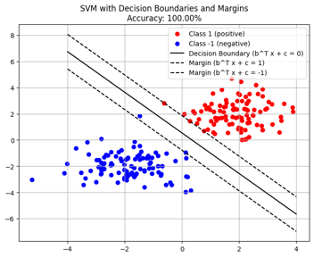

San Francisco Giants Batting Performance Analysis
Utilize clustering, regression, and machine learning to analyze and visualize players' batting performance. Based on insights revealed through data analysis, develop and recommend strategies to help players enhance their individual performance and contribute to improved overall team performance."